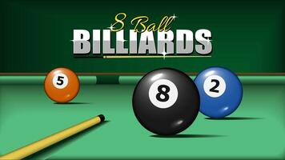
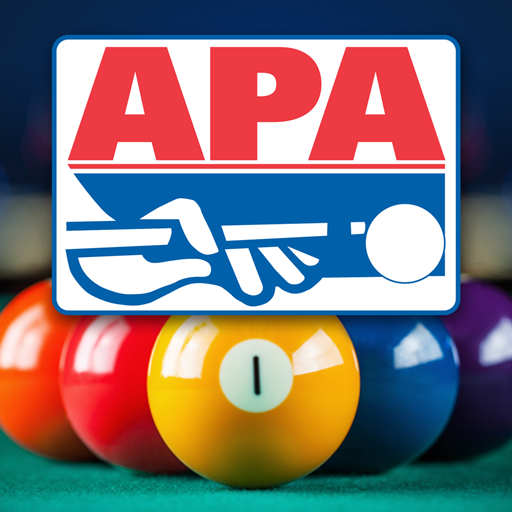
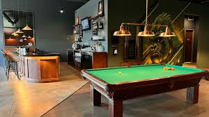
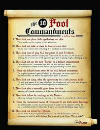
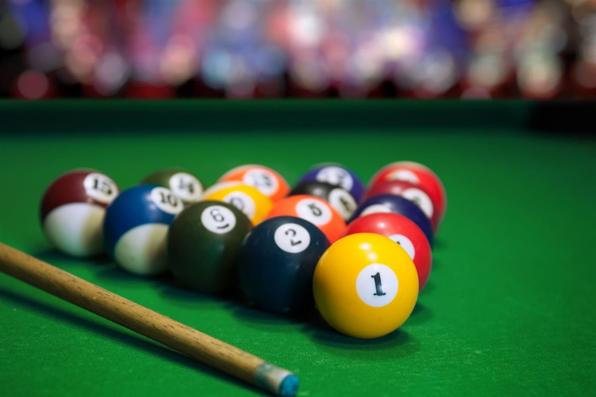

Home
Welcome to Billiards APA promotion webpage, where the love for the game meets a vibrant community of enthusiasts! Whether you’re a seasoned player perfecting your precision or a curious newcomer eager to learn, our space is designed for all things billiards. Explore expert tips, tournament highlights, and the latest in cues and tables, or simply soak in the timeless charm of this classic sport. Here, every shot counts, and every visitor is part of the family. Let’s make every game unforgettable!
Billiard's APA legue is a game for everyone, and we welcome players and enthusiasts of all skill levels and walks of life. Whether you're a competitive player chasing excellence, a casual fan looking to relax and have fun, or someone new to the game curious about its rich history and skillful techniques, billiards offers something special for you. Our community values passion, sportsmanship, and the joy of connecting over a shared love for this timeless game. If you're ready to make every break count, then you’re the perfect addition to our billiards family!
Who we Are
The American Poolplayers Association (APA) is the world's largest amateur pool league, with over 250,000 members across the United States, Canada, Japan, and Singapore. The APA organizes leagues and tournaments for pool enthusiasts of all skill levels, using a handicap system called "The Equalizer®" to ensure fair competition. They host major events like the APA Championships in Las Vegas, offering nearly $2 million in guaranteed prize money annually
If you're interested in joining or learning more, you can check out their official website. Are you a pool player yourself?
Locations to Play
You can find APA leagues in the Charlotte area through the APA of South Charlotte. They organize leagues and events at various locations, including places like Rack 'Em Pub & Billiards in Matthews, NC.
The Rock House Grill & Billiards is located at 2699 Aberdeen Blvd, Gastonia, NC, not far from Charlotte. It's a lively spot known for its welcoming atmosphere, great food, and well-maintained pool tables. They offer a variety of American-style dishes, including sandwiches and wings, and have a good selection of drinks. The venue is also popular for hosting events like APA pool tournaments, karaoke nights, and live music performances.
Rules
- Objective: The goal is to pocket all your designated balls (solids or stripes) and then legally pocket the 8-ball to win.
- Racking: The balls are racked in a triangle, with the 8-ball in the center. The front ball is placed on the foot spot.
- Breaking: A legal break requires the cue ball to hit the rack, and at least four object balls must hit the rails, or a ball must be pocketed.
- Open Table: After the break, the table is "open," meaning players can choose solids or stripes based on the first legally pocketed ball.
- Ball-in-Hand: Fouls result in "ball-in-hand," allowing the opponent to place the cue ball anywhere on the table.
- Winning: To win, you must legally pocket the 8-ball after clearing your group of balls. Pocketing the 8-ball early or fouling while doing so results in a loss.
- Objective: The goal is to legally pocket the 9-ball. Players must hit the lowest-numbered ball on the table first during each shot.
- Racking: The balls are arranged in a diamond shape, with the 1-ball at the front and the 9-ball in the center.
- Breaking: A legal break requires the cue ball to hit the 1-ball first, and at least four object balls must hit the rails, or a ball must be pocketed.
- Scoring: Players earn points for each ball they pocket (1 point per ball, 2 points for the 9-ball). The player with the most points at the end of the match wins.
- Ball-in-Hand: Fouls result in "ball-in-hand," allowing the opponent to place the cue ball anywhere on the table.
- Winning: To win, you must score the amount of points needed according to your handicap.
APA Seasons

- Spring Session: Starts in January and runs through early summer.
- Summer Session: Begins in June or July and continues into late summer or early fall.
- Fall Session: Kicks off in September and wraps up by the end of the year.
At the end of the Spring Session, World Qualifiers are held, leading up to the APA World Pool Championships, which typically take place in August in Las Vegas. If you're considering joining a league, now might be a great time to jump in! Let me know if you'd like help finding a team or more details about the sessions.
Why should you play?
Joining the APA is about more than just playing pool—it's about being part of a vibrant community that celebrates the love of the game. Whether you're a seasoned player or a beginner, the APA welcomes all skill levels with its unique handicap system, ensuring every match is competitive and fair. Beyond the thrill of gameplay, you'll find opportunities to meet new friends, enjoy fun social outings, and compete in exciting local and national tournaments, including the chance to qualify for the renowned APA World Pool Championships in Las Vegas. It's not just a league; it's an experience where skill meets camaraderie and passion meets recognition. If you're ready to elevate your pool game and make lasting memories, the APA is the perfect place to start!
Becoming a part of the APA means stepping into a world where passion for pool meets unforgettable experiences. It's a chance to enhance your skills, connect with a supportive community, and compete in events that could take you from your local bar to the bright lights of Las Vegas. Whether you're aiming for championships or just want to enjoy a fun and social activity, the APA offers something for everyone. Don't just play the game—be a part of something bigger. Join the APA and make your mark on the table
AI Prompts
- a paragraph to tell what type of audience I would like billards
- what is the American pool association
- where can I play in a APA league around charlotte
- What are the rules for APA 8 ball
- What about 9 ball
- when are the APA seasons
- why should I play in the APA
- give me a closing paragraph for joining the APA